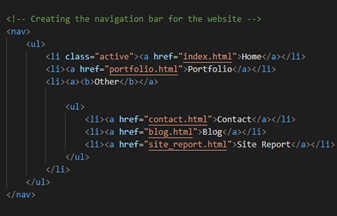
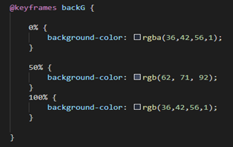

My experience of learning the basics of web development, coding, design and debugging process
I have really enjoyed learning about the basics of web development over the past few weeks. I still remember, when I first started this module, using Visual Studio code software for the very first time ever. At the start, I found it quit challenging to get accustomed to the interface of the software itself. I had never used this software before and I had no experience in HTML or CSS coding, so it was a bit overwhelming. However, my lecturer was very helpful as we started with just the basics of HTML code and then how the CSS sheets were linked to the html file was clearly explained. The exercises were very helpful, as it challenged me to think independently and creatively. I would say that the exercises that I completed were very helpful when developing my website. In terms of coding, I liked experimenting with the CSS, however, I found developing the HTML code challenging at times, especially when creating and displaying my grid with columns and rows for the first time. I particularly, found creating the hamburger icon quite challenging for my mobile site. I really enjoyed the creative side of the development such as creating the grid layout and building the CSS files as it allowed me to implement my creative skills, when developing my website. I really liked the trial-and-error aspect of it, for example, when using float, should I use right, or should I use left? The only way to find out was through experimenting. I personally believe this made the experience more enjoyable and I also learnt a lot in the process of trial-and-error about what works and what doesn’t work, while really enjoying it. I especially enjoyed developing the CSS files, yes it was definitely challenging, especially at the start, when learning about borders, box model and the different CSS units such as px, pt, vh,vw, % (percentages) and em, but I quickly learnt from my failures. I also enjoyed experimenting with the colours in CSS, such as using rgb and my most favourite, the hexadecimal colours. I really enjoyed creating a colour for my website background using hexadecimal. I enjoyed the designing part of my website the most. In terms of debugging, if there were any issues with my code or if I wanted to test something, for example, amend the border size or the margin, I used the developer tools on Google Chrome to basically experiment the amendments to check if they actually work like I expected it to. The two major benefits of this were that I could see the changes live and that if I made any additional errors, it would not affect my main code, as I am not directly editing the code file but just a copy of it. My overall experience of learning the basics of web development, coding, design and debugging process was really enjoyable. I really learnt a lot over the past few weeks about the basics as well as the more advanced aspects of both HTML and CSS.My ups and downs!
There were a lot of ups and downs that I faced when developing my website. In terms of ups, I was able to bring to life, the exact same vision that I had in my mind for my website, that I am very proud of. I was able to create the basic layout of the pages easily which was a great starting point. Furthermore, I was able to enhance my website, by adding hover effects to the navigation, which I am proud of. Finally, the achievement that I am most proud of is the animated background. It was a real struggle, to get this animated background working, however, after a lot of trial and error, I was able to create a very successful animated background, that I am extremely proud of.On the other hand, in terms of the downs, I struggled with creating the mobile navigation, which was a major down. The navigation would show, but the layout was very inconsistent. I spent quite a lot of time, making sure that all the links to the pages work and the layout of the navigation is consistent on the mobile layout, which was time consuming, but I was able to fix it successfully. Another down was that, creating the keyframe animations was very challenging. Although, I am proud of this achievement, I spent a significant amount of time, trying to get the animation working smoothly, by adjusting the gradient and the percentages several times, to ensure a smooth transition. The blog page was very challenging to create. I wanted to create three sections with buttons. I had to make several amendments to this page as when I validated this specific page, it resulted in a few errors, which meant that I had to make several major changes to the page in order to resolve the errors. This was very time consuming, which was a major down, however I was able to successfully resolve all the errors and create my desired layout. I was really happy with the way my blog page turned out, especially the buttons which are uniformed and work effectively, which I am really proud of.
A reflective discussion of my module experience
I have really enjoyed the module. I started the module, with no experience in html and CSS. As the module progressed, I developed a range of skills that can be used in html and CSS, to carry out specific tasks or functions. As well as developing my HTML and CSS skills I also developed my understanding of the software application Visual Studio Code which I had never used before. Furthermore, I also gained industry standard knowledge/skills through my lecturer which will be extremely helpful in the future. I really liked the structure of how the lectures were laid out. It started with basic understanding of HTML and CSS and then progressed onto the more complex concepts over time. The module overall, has really encouraged and challenged me to think logically as well as creatively. This resulted in me expanding my skills through experience. I made several errors, when building my website, but I quickly learned from my failures, by trying different options or approaches and seeking help from my lecturer. Overall, I have really enjoyed the module, I have definetely learnt a lot about html and CSS, but it has also taught me about perseverence. When something didn't work out, I would keep trying and trying until I had found a solution to my problem.Explaining my design decisions
Before I even started creating the draft design for how I wanted my website to look like, I spent a lot of time investigating into several websites, looking closely at the different types of navigation layouts that have been used. I also looked at any animations that have been used anywhere on the website that I think work effectively and just looking at the general structure of the websites and how the different features work together, for inspiration. Once, I had gathered inspiration, and created a rough design for the layout of my website on draw.io. I then, started developing a rough design for the layout of my website. I started by creating the navigation, where I had the links to the different webpages that I wanted to have, originally as bullet points and then across the top of each webpage. Then I also created a main section and a footer for the page using a grid, specifying the rows and columns that I wanted to have on the page. I had originally decided to have all the links to my webpages across the navigation However, after experimenting and to make the display visually appealing, I decided to create a dropdown where I put the contact, blog, and site_report as drop-down links with having other displayed on the navigation, to access the three pages. In my opinion, this navigation layout looked much better, so I decided to keep it. I felt like, it was a very effective decision to group the three webpages: contact, blog, and site_report together, as the navigation now looks more structured, and all the pages are easy to access. In terms of choosing font for the entire website and the font size, I really had to experiment with the different types of fonts that are available in CSS. I experimented with the several different fonts, which was very time consuming, to see which one works best and the one that looks the most professional. Again, with font size, I repeated the exact same process. I experimented with the several different fonts, to see which one works best and the one that looks the most professional, not too small, and not too big. I believe, I found just the right font size, which I was really happy about. With regards to colours, again, I had a rough idea of what colour family I wanted to use for my overall website. However, I really spent a lot of time experimenting with the hexadecimal colours, to find a perfect shade, that I wanted to use for my entire website. However, to enhance my website further, I decided to create keyframe animations for my website. Since, I had decided to implement an animated background for my website, I had to experiment with the different shades of the colour family, by adjusting the gradient and the percentages several times, to ensure a smooth transition.Progress of my website...
First log
Tuesday 22nd March
This is my very first log. As you can see, it is just a blank page. This was my very first commit, it was the day I started developing this website. I started by creating a rough layout of what my website should look like using a online software called draw io.
Progress of my website...
Second log
Friday 25th March
This is my second log. Here, I was developing the navigation for the website. This log is key as I am creating a effective drop down, where I grouped three of my pages, that are contact, blog and site report together in a list. This was a significant change to my navigation, as I now have a drop down menu, with links that work very effectively.
Progress of my website...
Third log
Tuesday 12th May
This is my third log. This is a keyframe animation that I created for the background. It creates a really smooth transition between the gradients. This is the last and the biggest change that I have made to my website since the development began. I originaly had a static, background colour across the website, however, I decided to experiment a little with keyframe animations and was really pleased and astonished with the result.
Following are the screenshots of validation reports, which shows that all my HTML and CSS files are valid.
home.html
The warnings were related to the heading and div tags. It wants me to add a heading, even though I don't need one. We are also not allowed to use div tags.
portfolio.html
No errors or warnings
web_development.html
The warnings were related to the heading and div tags. The validator wants me to add a heading, even though I don't need one. We are also not allowed to use div tags. Therefore the warnings cannot be fixed.
software_engineering.html
The warnings were related to the heading and div tags. The validator wants me to add a heading, even though I don't need one. We are also not allowed to use div tags. Therefore the warnings cannot be fixed.
databases.html
The warnings were related to the heading and div tags. The validator wants me to add a heading, even though I don't need one. We are also not allowed to use div tag. Therefore the warnings cannot be fixed.
programming.html
The warnings were related to the heading and div tags. The validator wants me to add a heading, even though I don't need one. We are also not allowed to use div tags. Therefore the warnings cannot be fixed.
contact.html
The warnings were related to the heading and div tags. The validator wants me to add a heading, even though I don't need one. We are also not allowed to use div tags. Therefore the warnings cannot be fixed.
blog.html
No errors or warnings
Website_start.html
The warnings were related to the heading and div tags. The validator wants me to add a heading, even though I don't need one. We are also not allowed to use div tags. Therefore the warnings cannot be fixed.
Website_progress.html
The warnings were related to the heading and div tags. The validator wants me to add a heading, even though I don't need one. We are also not allowed to use div tags. Therefore the warnings cannot be fixed.
Final_website.html
The warnings were related to the heading and div tagsg. The validator wants me to add a heading, even though I don't need one. We are also not allowed to use div tags. Therefore the warnings cannot be fixed.

site_report.html
The warnings were related to the heading and div tags. The validator wants me to add a heading, even though I don't need one. We are also not allowed to use div tags. Therefore the warnings cannot be fixed.
main.css
No errors
desktop.css
No errors
mobile.css
No errors